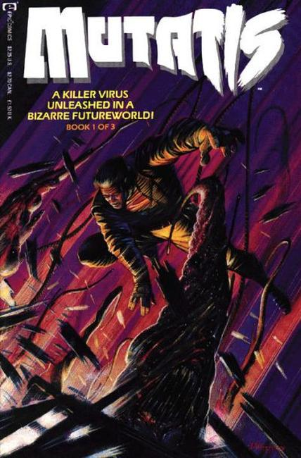

Series: 3 issues 1992
Publisher: Epic, Marvel
Written by Dan Abnett and Andy Lanning
Illustrations by John Higgins and Andy Lanning
Cover by John Higgins
The mutant virus Mutatis is loose in the near future, and it's turning people into monstrous creatures. One infected man is offered an antidote, but the price is he must find other infected people and kill them.